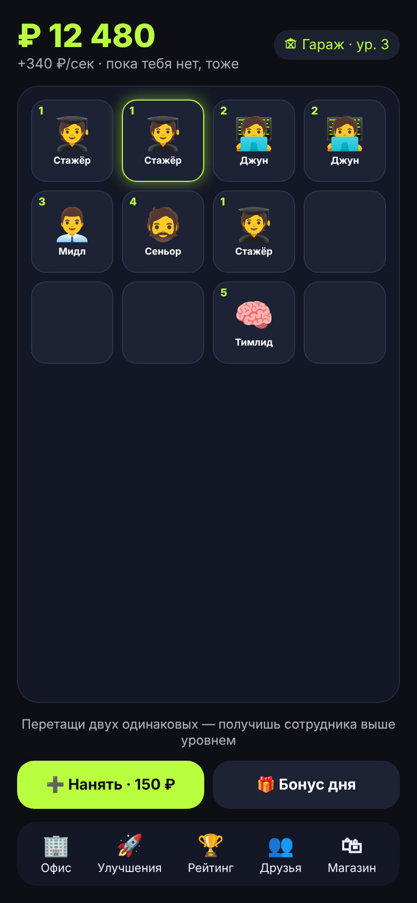

Ты основатель компании. Выбираешь один из 8 бизнесов — кофейню, IT-стартап, барбершоп, бургерную, автосервис, фитнес-клуб, игровую студию или доставку, — нанимаешь людей, объединяешь их в сильных специалистов, заботишься о команде и растишь дело до сети. Деньги идут, даже когда игра закрыта.
Короткие заходы по 1–3 минуты несколько раз в день. Соревнование с друзьями. Бесплатная игра с покупками за Telegram Stars и рекламой за награду.
Бот: t.me/startup_zero_bot · Репозиторий: my-first-game · Стиль: A «тёмный неон»
Это живой документ: всё здесь можно и нужно менять. Номера разделов — чтобы удобно писать правки: «в 4.2 поменяй…».

минуты длится заход: забрал деньги, объединил сотрудников, улучшил офис
компания зарабатывает, пока тебя нет — до 8 часов «офлайн-дохода» (можно увеличить)
двое одинаковых сотрудников сливаются в одного уровнем выше — основа игры
Вырастить компанию от гаража до «единорога» (оценка 1 млрд). Промежуточные цели: открыть новый офис, получить сотрудника нового уровня, обогнать друзей в рейтинге, выполнить задания дня.
Главный экран — сетка клеток (в гараже 4×3 = 12). В каждой клетке сидит сотрудник или пусто. Перетаскиваешь одного на такого же — получаешь одного уровнем выше. Пустая клетка нужна, чтобы нанимать.
Кнопка «➕ Нанять» ставит стажёра (уровень 1) в свободную клетку. Цена растёт с каждым наймом (+7%). Позже открывается «найм сразу джуна» — дороже, но экономит время.
Каждый сотрудник приносит деньги каждую секунду. Сотрудник уровня N приносит примерно в 2,2 раза больше уровня N−1 — поэтому объединять выгоднее, чем держать двух слабых. Деньги копятся и в закрытой игре: при входе — окно «Пока тебя не было: +48 300 ₽» и кнопка «Забрать» (и «×2 за рекламу»).
Тап по сотруднику — маленький бонус-«кофе»: мгновенно даёт 2 секунды его дохода (раз в 3 секунды). Это даёт рукам дело, но игра не превращается в тапалку.
Открыл бот утром → забрал 8 часов дохода → получил бонус дня → нанял 4 стажёров, объединил в джунов → купил улучшение «Кофемашина» → выполнил 1 из 3 заданий дня → закрыл. ~2 минуты. Вечером — то же, плюс случайное событие и проверка рейтинга друзей.
| Ур. | Кто | Доход/сек (старт) | Шутка в карточке |
|---|---|---|---|
| 1 | 🧑🎓 Стажёр | 1 ₽ | «Где тут кнопка “сделать сайт”?» |
| 2 | 🧑💻 Джун | 2,2 ₽ | «Работает — не трогай» |
| 3 | 👨💼 Мидл | 4,8 ₽ | «Это не баг, это фича» |
| 4 | 🧔 Сеньор | 10,6 ₽ | «Видел и не такое в 2019-м» |
| 5 | 🧠 Тимлид | 23 ₽ | «Давайте созвонимся» |
| 6 | 🏗 Архитектор | 51 ₽ | «Перепишем на микросервисы» |
| 7 | ⚙️ CTO | 112 ₽ | «Масштабируемся» |
| 8 | 📈 Product | 247 ₽ | «Пользователи хотят не это» |
| 9 | 🦄 Сооснователь | 543 ₽ | «Мы меняем мир» |
| 10+ | 🌌 Легенды | ×2,2 дальше | Открываются в Кремниевой долине |
| Редкость | Доход | Как выглядит | Откуда |
|---|---|---|---|
| ⚪ Обычный | ×1 | обычная клетка | кнопка «Нанять» |
| 🔵 Редкий | ×1,5 | голубая рамка и свечение, метка РЕД | пачки резюме, 5 осколков, 3 друга |
| 🟣 Эпический | ×2,5 | фиолетовая рамка, метка ЭПИК | пачки, 10 друзей |
| 🟡 Легендарный | ×5 | золотая рамка с бегущим бликом, метка ЛЕГА | пачки (редко), 25 друзей |
Слияние. Сливать можно двух одного уровня — редкость не мешает. Новый сотрудник берёт лучшую редкость из двух: обычный Мидл + редкий Мидл = редкий Сеньор. Так один редкий «тянет» всю ветку вверх. Если оба одной редкости — честный шанс, что новый станет на ступень выше: обычные — 3%, редкие — 10%, эпические — 5%. Шансы написаны в агентстве.
Каждый уровень — свой персонаж, нарисованный нейросетью в едином стиле (тёмный фон, неоновая салатовая подсветка, как на обложке). Интерфейс — кодом. Анимация при объединении: вспышка и «+1 уровень».
| Офис | Клеток | Множитель дохода | Как открыть |
|---|---|---|---|
| 🏚 Гараж | 12 (4×3) | ×1 | старт |
| ☕ Коворкинг | 16 (4×4) | ×3 | получить Сеньора + 50 тыс ₽ |
| 🏢 Свой офис | 20 (4×5) | ×10 | Тимлид + 1 млн ₽ |
| 🌆 Москва-Сити | 24 (4×6) | ×40 | CTO + 50 млн ₽ |
| 🌉 Кремниевая долина | 30 (5×6) | ×200 | Сооснователь + 2 млрд ₽ |
При переезде сотрудники остаются, но деньги сгорают — зато множитель дохода и место резко растут. Это даёт ощущение «новой главы» каждые несколько дней игры.
Когда компания упирается в потолок, можно «продать стартап» и начать заново с акциями — постоянным бонусом к доходу во всех следующих забегах. Это держит игроков месяцами. Включаем во 2-й версии.
| Улучшение | Эффект |
|---|---|
| ☕ Кофемашина | +10% к доходу за уровень |
| 🛋 Удобные кресла | офлайн-доход копится дольше: 8 → 12 → 24 ч |
| 🧑🏫 Онбординг | шанс нанять сразу джуна |
| 📢 Пиар | найм дешевле на 5% за уровень |
| 🤖 Автоматизация | сотрудники объединяются сами раз в N минут |
| День | 1 | 2 | 3 | 4 | 5 | 6 | 7 |
|---|---|---|---|---|---|---|---|
| Награда | 💰 2 мин дохода | 🧩 осколок | 💰 5 мин | 📁 пачка «Стандарт» | 🧩 2 осколка | 💰 10 мин | 💼 пачка «Премиум» |
Дальше по кругу. Пропустил день — серия с 1-го дня. Кнопка «×2 за рекламу» уже нарисована, работает позже. Осколки резюме: 5 штук → редкий сотрудник.
Каждый день 3 новых из 6: объединить 25 раз, нанять 40, позаботиться о команде 3 раза, тапнуть 40 раз, открыть пачку, купить 3 улучшения. За каждое — 2 минуты дохода, за все три — сундук (пачка «Стандарт» + осколок).
Кнопка рядом с «Нанять»: доход ×2 на 5 минут, бесплатно раз в 4 часа. Позже — сразу за рекламу. Напоминание в боте (позже): «Офис заработал 120 000 ₽, команда устала» — не чаще раза в день.
2–4 раза в день появляется карточка с выбором. От выбора зависит награда или штраф.
| Событие | Выбор |
|---|---|
| 🔥 Прод упал в пятницу | Чинить всем (стоп дохода на 1 мин, +опыт) / Оставить на понедельник (−20% дохода на час) |
| 🧾 Клиент передумал | Переделать (деньги ×2 через 5 мин) / Отказаться |
| 🐛 Нашли баг | Тапни 10 багов за 5 секунд — мини-игра |
Смешанная модель, как ты выбрал. Главное правило: играть и побеждать можно без оплаты, платные вещи ускоряют и украшают.
Только по желанию игрока, не чаще 5 раз в день. Подключаем позже, когда будет 1000+ игроков (рекламные сети для Mini Apps).
| Часть | Что и где |
|---|---|
| Игра (экран) | Telegram Mini App: HTML + JavaScript, без тяжёлых движков — быстро грузится. Хостинг — GitHub Pages из репозитория my-first-game, бесплатно, обновляется сам. |
| Бот | @startup_zero_bot: кнопка «Играть», приглашения друзей, напоминания, оплата Stars. Живёт рядом с другими твоими ботами (каркас alex-bots). |
| Сохранения и рейтинг | Сервер (PHP + MySQL на твоём Timeweb, тариф не меняем). Игрок узнаётся по подписи Telegram — подделать прогресс нельзя. |
| Защита от читов | Доход считается на сервере по времени; клиент присылает только действия (нанял, объединил). |
| Аналитика | Сколько людей вернулось на 1-й, 7-й день; где бросают игру. |
| Этап | Что будет |
|---|---|
| 0. Сейчас | Концепция (этот файл) → твои правки → бот готов ✅ |
| 1. Играбельная основа | Сетка, найм, объединение, доход и офлайн-доход, сохранение. Персонажи пока смайликами. Можно играть в Telegram. |
| 2. Первая версия | Офисы, улучшения, бонус дня, задания, рейтинг, друзья, нарисованные персонажи. |
| 3. Показать друзьям | Собираем замечания, правим баланс. Пост в канал про игру. |
| 4. Деньги | Магазин за Stars, события, потом реклама. |
| 5. Дальше | Раунды инвестиций (престиж), сезонные события (Новый год, 8 марта), помощь друзьям. |
По плану на 2 месяца: рабочая первая версия — к середине января.
Механика одна, а люди, шутки, помещения, улучшения и потребности — свои. Все 8 открыты сразу: первое решение игрока — самое важное, пусть выберет то, что ему близко (бургеры, машины, спорт). Цель «открыть второй бизнес» остаётся — это 2-й слот холдинга (вариант 05) на 5-м уровне сотрудника.
| Бизнес | Сотрудники 1 → 8 | Помещения | Потребности |
|---|---|---|---|
| ☕ Кофейня | Стажёр → Бариста → … → 👑 Владелец сети | Ларёк → У метро → Сеть | 🍵 чай, 🥐 круассаны, 😴 отдых |
| 💻 IT-стартап | Стажёр → Джун → Мидл → … → 🦄 Сооснователь | Гараж → Коворкинг → Свой офис | ☕ кофе, 🍕 пицца, 🎮 приставка |
| 💇 Барбершоп | Ученик → Барбер → … → 👑 Владелец бренда | Кресло → Барбершоп → Сеть | ✂️ заточка ножниц, 🍕 обед, 😴 перерыв |
| 🍔 Бургерная | Пом. повара → Повар → Гриль-мастер → Су-шеф → Шеф → Управляющий → Франчайзи → 👑 | Фудтрак → На углу → Сеть | 🔪 ножи, 🥤 газировка, 🪑 посидеть |
| 🚗 Автосервис | Мойщик → Слесарь → Механик → Диагност → Приёмщик → Нач. цеха → Дир. СТО → 👑 | Бокс → Автосервис → Автоцентр | 🔧 ключи, 🌯 шаурма, 📻 радио |
| 🏋️ Фитнес-клуб | Уборщик → Инструктор → Тренер → Йога → Нутрициолог → Ст. тренер → Директор → 👑 | Подвал → Клуб → Сеть с бассейном | 🥤 протеин, 🥗 салат, 🧖 сауна |
| 🎮 Игровая студия | Тестер → Художник → Геймдизайнер → Программист → Композитор → Продюсер → Креатив-дир. → 👑 | Общага → Студия → Издатель | ⚡ энергетик, 🍜 лапша, 🛋️ диван |
| 🚚 Доставка | Упаковщик → Курьер → Велокурьер → Мотокурьер → Логист → Диспетчер → Дир. склада → 👑 | Самокат → Фургон → Автопарк | 🔋 зарядка, 🌭 перекус, 🧦 сухие носки |
У каждого уровня — своя шутка («Котлету переворачиваю один раз. Как учил дед», «Кто опять унёс ключ на 10?!»). Улучшения тоже свои: «Гриль на углях», «Гидравлический подъёмник», «Движок Pro»… Цветочного бизнеса нет — по твоей просьбе.
Пачки резюме: открываешь — карточки переворачиваются по одной, редкие светятся своим цветом. Сотрудники садятся в свободные клетки, остальные ждут в «приёмной» (кнопка «Нанять» превращается в «Из приёмной»).
| Пачка | Цена | Резюме | Уровень | Шансы: обычный / редкий / эпик / лега |
|---|---|---|---|---|
| 📄 Бесплатная | раз в 8 часов | 2 | 1 | 80 / 17 / 3 / 0% |
| 📁 Стандарт | как 8 наймов (₽ в игре) | 3 | 1–2 | 70 / 24 / 5 / 1% |
| 💼 Премиум | ⭐ 49 (скоро) | 4 | 2–3 | 0 / 70 / 25 / 5% |
| 🌟 Звёздная | ⭐ 149 (скоро) | 5 | 3 | 0 / 0 / 80 / 20% |
У каждой пачки — полоска шансов от минимальной редкости до максимальной (как шкала min → max), цифры видны всегда: честно и понятно. Пока оплаты звёздами нет, кнопки платных пачек показывают цену и «скоро».
Даются в календаре (дни 2 и 5) и в сундуке заданий дня. 5 осколков → редкий сотрудник 2-го уровня. Примерно 2 редких в неделю для того, кто заходит каждый день.
Над сеткой — три шкалы потребностей со своими названиями у каждого бизнеса (у барбершопа «заточить ножницы», у курьеров «сухие носки»). Шкалы падают со временем: бодрость — за 6 ч, еда — за 7 ч, отдых — за 8 ч.
Зачем: даёт причину зайти «покормить команду» 2–3 раза в день, но не наказывает жёстко — доход никогда не падает больше чем вдвое.
Прогон «разумного игрока» (tools/simulate.js, 30 прогонов с разными случайностями, тапает 30% возможных раз, берёт бесплатную пачку, календарь, задания и аврал):
| Событие | Время (медиана) |
|---|---|
| Первое слияние | первые секунды (обучение) |
| 3-й уровень сотрудника | ~0:33 |
| 5-й уровень (открывает намёк на холдинг) | ~1:00 |
| 7-й уровень | ~2:50 |
| Переезд во 2-е помещение (5-й уровень + 30 000 ₽) | ~19 мин (17–29 мин); без тапов ~25 мин |
| 3-е помещение (7-й уровень + 1,8 млн ₽) | ~2 часа игры (несколько дней заходов) |
Для сравнения, без новых механик (как в этапе 1) переезд был бы на ~18 мин — бонусы из пачек, календаря и аврала мы «съели» более дорогим переездом (было 12 000 ₽, стало 30 000 ₽), чтобы темп остался прежним.
Пиши номер раздела и что поменять: «3 — добавь уровень “Дизайнер”», «9 — убери рекламу совсем», «4 — переезд без сгорания денег». Я обновлю этот файл и дам новую версию, чтобы всегда была одна актуальная концепция.